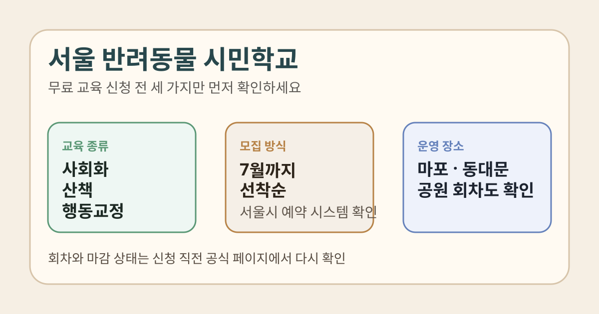

서울 반려동물 시민학교 신청을 찾는 분들이 지금 가장 궁금한 건 어떤 교육을 들을 수 있는지, 비용이 드는지, 어디에서 신청하는지일 가능성이 큽니다. 반려견 교육은 과정 이름이 비슷해 보여도 목적이 달라서, 문제행동 교정이 필요한지 사회화 교육이 필요한지부터 나눠 보는 편이 좋습니다.
이 글은 2026년 3월 12일 서울시 공식 안내를 기준으로 정리했습니다. 모집 일정과 세부 회차는 수시로 바뀔 수 있으니, 실제 신청 직전에는 서울시 공공서비스예약 화면과 서울시 안내 페이지를 다시 확인하세요.

1. 서울 반려동물 시민학교는 어떤 교육인가요?
서울시가 2026년 3월 12일 공개한 안내에 따르면, 반려동물 시민학교는 반려견의 사회화와 문제행동 교정을 통해 돌발 행동을 예방하고 공동주거 환경의 불편을 줄이기 위한 교육사업입니다.
기사 본문에는 봄·여름 학기를 운영하며 7월까지 선착순 상시 모집, 총 2,000여 명 대상이라고 적혀 있습니다. 즉, 한 번에 전체를 모집하는 구조로 단정하기보다 회차별로 자리가 열릴 때 바로 확인하는 쪽이 안전합니다.
2. 어떤 과정이 있나요?
서울시 공식 안내 기준으로 신청 가능한 핵심 과정은 아래 네 가지입니다.
- 강아지 사회화·예절교육: 1살 미만 강아지와 1살 이상 성견을 나눠 적응 훈련
- 반려견 산책교육: 산책 습관과 펫티켓을 실습 중심으로 배우는 과정
- 반려동물 행동교정 교육: 짖음, 예민 반응 등 문제행동 교정 중심
- 반려동물 체험교육: 독 피트니스, 셀프 미용, 양모펠트 만들기 등
또한 서울시는 7월에 문제행동 교정 기초과정 이수자를 위한 심화과정을 신설한다고 안내했습니다. 이미 기초과정을 들은 보호자라면 심화반 개설 여부를 같이 확인해볼 만합니다.
3. 어디에서 진행하나요?
공식 안내에는 서울시립동물복지지원센터 마포·동대문에서 운영한다고 나와 있습니다. 다만 산책교육은 보라매공원, 북서울꿈의숲, 어린이대공원, 올림픽공원, 서울식물원, 월드컵공원 등 여러 야외 장소에서 진행될 수 있어 집과 가까운 장소를 먼저 보는 편이 좋습니다.
특히 평일 이동이 어려운 보호자는 센터 위치보다 산책교육 장소와 회차가 더 중요할 수 있습니다.
4. 비용과 신청 방법은?
서울시 공식 안내에 따르면 전 교육과정은 무료입니다. 신청은 서울시 공공서비스예약 시스템을 통해 진행합니다.
- 신청 경로: 서울시 공공서비스예약 시스템
- 모집 방식: 선착순 상시 모집
- 문의처: 마포센터 02-2124-2833, 동대문센터 02-921-2412
무료 교육은 신청이 빠르게 마감될 수 있으니, 원하는 과정이 보이면 회차별 신청 가능 날짜와 준비물을 바로 확인하는 편이 좋습니다.
5. 어떤 보호자에게 특히 유용한가요?
- 처음 반려견을 키우기 시작해 사회화 교육이 필요한 경우
- 산책 거부, 짖음, 낯선 사람 반응 같은 문제행동이 고민인 경우
- 반려견과의 교감 활동이나 체험형 수업을 찾는 경우
- 입양 후 초기 적응과 양육 동선을 점검하고 싶은 경우
서울시는 공식 안내에서 입양가정과 임시보호자 대상 1:1 맞춤 지도도 소개하고 있습니다. 단순 강의형 수업이 아니라 실제 생활 습관을 다루는 쪽에 가깝다는 점이 특징입니다.
6. 신청 전에 확인하면 좋은 체크리스트
- 우리 반려견이 사회화·예절교육 대상인지, 행동교정이 더 필요한지
- 교육 장소가 마포·동대문센터인지, 야외 공원 회차인지
- 원하는 회차가 선착순인지와 모집 마감 여부
- 기초과정 이수 여부가 필요한 심화과정인지
- 센터 문의가 필요한 개별 상황이 있는지
한 번에 요약하면
- 2026년 3월 12일 서울시 안내 기준 반려동물 시민학교는 봄·여름 학기를 운영하고 7월까지 선착순 상시 모집입니다.
- 교육은 사회화·예절교육, 산책교육, 행동교정, 체험교육으로 나뉩니다.
- 서울시 공공서비스예약 시스템에서 신청하며, 전 과정 무료입니다.
- 운영 거점은 서울시립동물복지지원센터 마포·동대문이고 일부 수업은 공원에서 진행됩니다.
- 회차와 세부 조건은 바뀔 수 있으니 신청 직전 공식 페이지 재확인이 필요합니다.
자주 묻는 질문
Q. 서울 반려동물 시민학교는 유료인가요?
서울시 2026-03-12 안내 기준으로 전 교육과정은 무료입니다.
Q. 아무 과정이나 신청하면 되나요?
과정별 목적이 다르기 때문에 사회화가 필요한지, 산책 습관 교정이 필요한지, 문제행동 상담이 필요한지 먼저 나눠보는 편이 좋습니다.
Q. 신청은 어디서 하나요?
서울시 공공서비스예약 시스템에서 신청하고, 세부 문의는 마포센터 또는 동대문센터로 할 수 있습니다.
공식 링크
반려동물 시민학교는 회차별 일정과 자리 상황이 달라질 수 있습니다. 실제 신청 전에는 서울시 안내와 예약 시스템의 최신 공지를 다시 확인하세요.